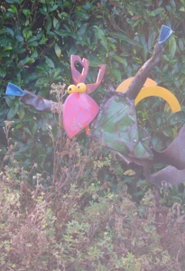

Links
Dierencrematoriums
| Huisdierencrematorium, Beek | www.dierencrematorium-beek.nl |
|---|---|
| SHCN Dierenuitvaart, Roermond | www.dierenuitvaart.nl |
| Huisdierencrematorium Zuid-Limburg, Heerlen | www.huisdierencrematoriumparkstad.nl |
Diversen
| Bruidsduiven te huur | bruidsduivenvalkenburg.webklik.nl |
|---|---|
| Databank van Gezelschapsdieren | www.ndg.nl Chipregistratie / vermissing huisdieren |
| Backhome | www.backhomeclub.nl Chipregistratie / vermissing huisdieren |
| Greyhound Foundation, Nederland | www.greyhoundfoundation.nl |
| Controle gezelschapsdierenregels per land | www.licg.nl |
Laboratoriums
| Gezondheidsdienst voor Dieren, Deventer | www.gddeventer.com |
|---|---|
| Universiteit van Utrecht, Utrecht | www.uu.nl |
| Merefelt Livestock Diagnostics, Nederweert | www.merefelt.com |
| Idexx Referentielab | www.idexx.nl |
Koi’s en vijverbenodigdheden
| Lupa Outdoor-Vijvercentrum Limburg, Schimmert | www.vijvercentrumlimburg.nl |
|---|---|
| Merakel BV, Landgraaf | www.merakal.nl |
| Takazumi, Mariënheem | www.takazumi.nl |
